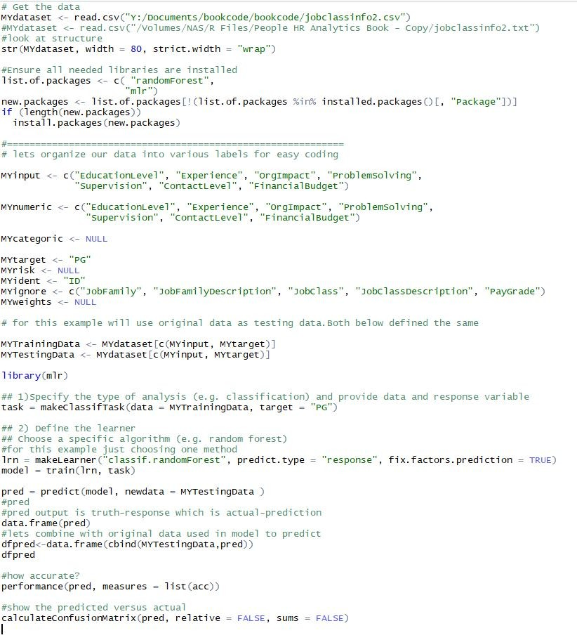

Introduction
HR Analytics is still in its infancy in most organizations. One way to gauge that is to ask about and investigate the degree to which activity in this area is evident in HR practices in organizations. If you have either read some of my previous articles:
https://www.linkedin.com/in/lyndon-sundmark-mba-59272a/detail/recent-activity/posts/
or read the book I published:
https://www.analyticsinhr.com/hr-analytics-books/
https://www.amazon.com/s/ref=nb_sb_noss?url=search-alias%3Daps&field-keywords=Lyndon+Sundmark
you may remember that there are at least 3 broad categories that have the capacity generate HR-related information/data that can benefit from the use of HR Analytics:
Traditional HR Metrics – information generated because of ‘onboarding, participation in, and offboarding’ of employees as they interact with organizations
HR Operations themselves -when HR starts capturing information about every ‘HR request for service’ that comes into them, tracking its status from inception to completion to assist in HR process improvement.
Embedding HR Analytics (Machine Learning and Artificial Intelligence) directly into HR methodologies themselves to improve the reliability and validity of the HR decisions we make on behalf of the organization
I’ve mentioned in my book and in previous LinkedIn articles the rarity of this evidence - particularly of the last two. And in most organizations even the first one stagnates typically at the first level of analytics- ‘descriptive’ (reports and dashboards), rarely venturing into the even higher payoff areas of diagnostic, predictive, and prescriptive.
I think that one way for HR to get out of its infancy, in this area of HR, is to continue as much as possible to immerse itself hands-on into their data wherever possible and experiment with HR analytics on their data (with appropriate rightful access assumed of course.)
It’s in that spirit, that I continue to have the passion to write in this field. The intent is to show examples of how HR analytics and some of the technologies out there can be brought to bear to make this field ‘more real’ to organizations and show that real gains can be made in the productivity in the organization as a result.
In this blog article, I wanted to explore further a previous example that I had given- Job Classification in R- and share a little bit further one example of what that ‘embedding’ might look like in a practical example, and how some of Microsoft’s technologies might help and be of use in that regard.
The Previous Job Classification Example
If you want the details, please refer to the original article in this link
A Reader’s Digest version
The previous example used statistical ‘classification’ algorithms to do ‘job’ classification in HR. A series of 66 ‘narrative’ job class specifications were reviewed - from a hypothetical organization for commonalities. After reviewing the narrative descriptions, it became evident that a common set of ‘factors’ were used in the traditional classification process to determine the pay grade. These were:
Education level
Experience
Organizational Impact
Problem Solving
Supervision
Contact Level
Financial Budgetary Responsibility
Each narrative description was quantified as to the level of each of these mentioned in each job classification description. For each description, a record of data was created in a spreadsheet with identifying information, and the current Pay Grade assigned.
The goal in HR Analytics in this example was to see whether this quantification of information from narrative sources and application of machine learning algorithms could provide a reasonable prediction of the paygrade - as compared to the actual paygrade.
In looking at the previous article, the accuracy of predicted versus actual was pretty good- so in the R script an example was given to test a ‘new’ job classification not in that existing population or records to determine where it would line up paygrade wise- given the ‘known’ population.
The example above showed the process used to validate which algorithm performed best on the data- with the accuracy of prediction against actual being the criteria. With the best algorithm chosen, new data was then applied to the model.
In a very loose, rudimentary, technical and ‘non-user-friendly’ way – that WAS ‘embedding’ - choosing to use the results of machine learning as part of the ‘decision making’ in a Job Classification process that already existed.
Generally, the more you find yourself able to trust the results (from your experience) of machine learning, the more willing you are to significantly alter your current practices.
But what if we wanted this ‘embedding’ to be more ’ user-friendly’?
What if we wanted to encourage end users to use the power of machine learning and artificial intelligence in something they can interact with? One of the ways of doing that is to develop an end-user application that puts the complexities of ‘doing’ and the ‘how its done’ behind the scenes.
Enter Microsoft R Server, Microsoft SQL Server 2017, and Visual Studio 2017
While R is freely downloadable from CRAN, you can also download it from MRAN which Microsoft’s version of R is- based on CRAN R with some nice additions. I will leave it up to you the reader to track down the details of the differences. But one significant difference is that Microsoft has a server version. This version is significant because it allows the running or execution of R within SQL Server itself.
Why is this important?
There are at least a couple of reasons:
· When it runs inside SQL Server itself, data doesn’t have to be imported and exported out of SQL Server. For this simple example of 66 records- this isn’t terribly important. But when you have hundreds of thousands of records, or millions or billions or records- import/export is a big issue. Your data starts in SQL Server and stays there.
· When it runs inside of SQL Server, other software can be used in conjunction with SQL server to develop end-user applications. R scripts exist inside stored procedures. And stored procedures can be called from applications developed in Visual Studio (in this case version 2017).
· This means that once a predictive model has been created and validated for use, an end user doesn’t need to know R to use the predictive model built in R. It is ‘behind the scenes’. The user interacts with an end user application instead of R.
An Example That Illustrates This
For those of you who have read several my previous articles, sometimes I provide full code so that you can run everything yourselves from beginning to end.
The purpose of this article isn’t that- but rather to help clarify what embedding machine learning and artificial intelligence in HR practices and methodologies can and might look like. I will provide code snippets for some ‘hands-on’, but really the purpose is to get those in HR to increasing think about how to become more data-driven in how they do HR.
The Steps Involved
The following steps were carried out in this example:
Create a predictive model in R for use in embedding
‘Embed’ the predictive model in SQL Server
Create some tables in SQL server to store new data records and the predictions
Create a quick ASP.NET MVC end-user web application to manage new data records and execute the predictive model and bring back results to the end user.
1.Create the Predictive Model in R
In my previous blog articles and code examples, I use R ‘Rattle’ to generate much of the code to test various predictive models. Rattle was a GUI front end which generated code quickly- some of which you needed to know a lot of R to understand.
One of the nice things about R is that sometimes you have your choice of many packages to do the same things- some of which are far more readable than others. Since I had used R ‘Rattle’ before, I wanted to try some other packages. In Microsoft’s version of R, they had two libraries that they created which they used in their examples of how to embed in SQL Server. These libraries were RevoscaleR and MicrosoftML. I tried their examples to get a feel of how this would work in SQL Server. They worked, and I thought – ‘this is cool’. But then I began wondering whether I could use their pattern of code in SQL server using other R libraries.
One such R library was ‘mlr’ or ‘machine learning in R’.
https://mlr-org.github.io/mlr-tutorial/release/html/
I liked its syntax because it was more readable and understandable to me. But would it work when embedded into SQL Server? Happy to say it did.
So here is the R predictive model and code before it was embedded into SQL Server- so that you can see what we are embedding:
The data for creating the model is here:
https://www.kaggle.com/HRAnalyticRepository/job-classification-dataset
Here is R code

You would have to change MYdataset to wherever you saved the csv file. Also, note that only possibly predictive variables and target are included the training and testing data – not identifying information.
The prediction generates data for all 66 records (I’m showing only first 14)
The truth is the ‘actual’ and the response is the ’predicted”.
Let’s see if we can combine original data with prediction:
Yup.
Ok let’s calculate accuracy of the model and create confusion matrix:
98.4% accuracy!
2.Embed this model in SQL Server
Now that we have a good model, let’s proceed to the next major step of embedding it in SQL Server. To do this we will construct several tables and stored procedures in SQL Server. We need:
Tables:
A table for the training data itself
A table to serialize and store the model itself within SQL Server
Stored Procedures and SQL:
Create, and serialize the model (do this once)- dbo.generate_jobclass_model
SQL to save the model (do this once)
Unserialize the model and run it against new data to get predictions (as often as you need predictions)- dbo.predict_joblass_new
Have the capacity to run that prediction from outside of SQL Server (as often as you need predictions)- dbo.generatepgpred – called later by our application to run prediction
I have created two tables in the jobclass database- jobclassinfo2 and jobclass_modelsJobclassinfo2 mirrors the csv file contents we showed previously. Jobclass_models has only 2 fields- the name and the serialized model.
The contents look like:
Here is the stored procedure to create and serialize model and the sql to save it:

But we are not quite finished. We still need to create a stored procedure to use the model to predict paygrades on new data and the ability to run that stored procedure.
This SQL creates the prediction stored procedure:
This is the SQL to run it:
You will notice in the last one we tell it in a SQL Select statement where to read the new data from- a table called JobClassInformation. And from the former, we tell it to store the predictions in the JobClassPredictions table. Also, in the former, we tell SQL server to update the JobClassInformation table with the results of the predictions.
For those familiar with SQL- you can see the interplay necessary to embed R Code within SQL.
Most of the above SQL above is patterned after the code that Microsoft provides itself for the examples it provides. I thank them for their tutorials on this.
3.Create some tables in SQL server to store new data records and the predictions
The last step is to be able to store new data that needs predictions and the predictions. This was hinted at in the code in the last section.
We will create two new SQL tables – one for new data and one for predictions. These look very similar to the training data table:
The difference is the ‘response’ variable which is the prediction. It’s initially empty in the first, filled in the second one, and then updated in the first.
The reason for that is that in the final step- the ASP.NET MVC application we build – will be built around the JobClassInfomation table. That is the one end users will interact with. So we will want to see the results there.
4. Create a quick ASP.NET MVC end-user web application to manage new data records and execute the predictive model and bring back results to the end user.
This is the final step that I did. I wanted to get to the point where the end user could make use of the power of machine learning and artificial intelligence with something that was user-friendly.
This required a few steps:
1.Create an ASP.NET MVC application in Visual Studio 2017
2.Add a data entity model based on the previously mentioned JobClassInformation table
3.Scaffold ( generate code) from that table through the data entity model to create web pages that would list the records in the table and allow for the CRUD ( create,edit, update, and deletion) of records by the end user.
4.Add to the list page a ‘link’ to the listing page to actually run the R predictive model behind the scenes and return to the results to the listing page.
For those familiar with ASP.NET MVC, they know the first three of the steps are fairly straightforward and doesn’t require them to write much if any code. For the fourth step, I made changes to the JobClassInformationsController and to the index view for that controller.
JobClassInformationsController
I added an additional ActionResult ‘GeneratePayGradePrediction’ for running the SQL stored procedure that generates the prediction.
Index View
I also made changes to the Index view for JobClassInformation - I added the second Html.ActionLink to run the controller and present the link on the user screen:
What does it look like to the end user?
Initial Screen
Manage Job Records
Notice the response column is empty.
Edit Screen
Generate Prediction
Click the generate prediction link on the list screen and ‘voila’ – the predictions are generated in the response column.
Although I had several records here, even if you had just one new record, as long the Education Level through Financial Budget scores were filled out, it would generate a prediction in the response column based on that provided information.
Wrap-up
In this illustration, you saw an example of a journey to get Machine Learning and Artificial Intelligence from the world of the HR data Scientist to the world of the HR End User.
How does this affect the end user?
Some things are the same and some are different. The HR End User in this example still receives a job or position description in narrative form and still has to determine the levels of education level through financial budgeting.
Under their current system, they might have to eyeball some selected ‘best candidates’ of possible job classification specifications which are also narrative. And through their judgment see how the levels of these factors compare to these ‘candidate’ specs and make a judgment of best fit- and then assign a pay grade based on the paygrade of the best fit comparison. This is a very time-consuming process and is only as good as the person’s judgment who is making the comparison. And if the evaluation is questioned by the incumbent and line manager- more time is then taken.
Under the new approach above, the analyst determines the level of the factors education level through financial budget responsibilities on numeric scales and plugs them into an application, clicks a link and gets an immediate prediction- based not on just a ‘few select candidate comparisons’ but on the entire population of already classified positions or job class specs- because the entire population was used to create the predictive model in the first place.
It’s important to remember that the above embedding, as an example, would only make sense if your prior analytics activity showed that you had a highly ‘predictive’ model. One of the purposes of HR Analytics is to see if there are predictive patterns in your data that can be harnessed for the organization’s benefit.
The whole point of sharing this example is to get HR to ‘increasingly’ THINK DIFFERENTLY from their traditional practices and see how ‘embedded’ Machine Learning and Artificial Intelligence might improve their decisions and productivity to the organization. Continuous improvement and betterment of HR decision making in an organization should always be a high priority for HR.
I hope the example shared stimulates new thinking for you in your organization. This is just one small example based on traditional approaches found in some organization and attempting to improve it. The possible application or machine learning and artificial intelligence in HR may be as wide and as limitless as your imagination.